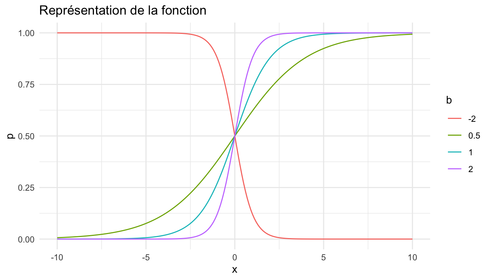
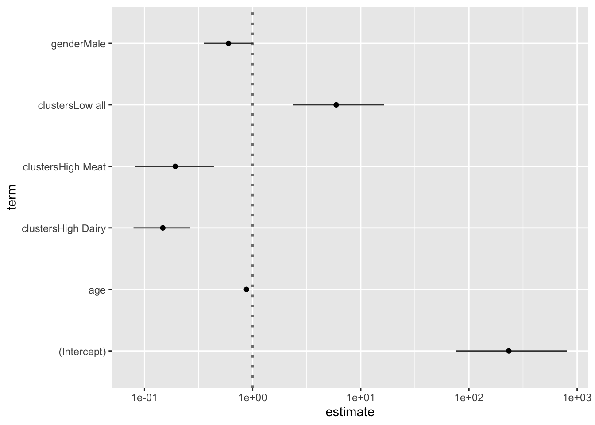
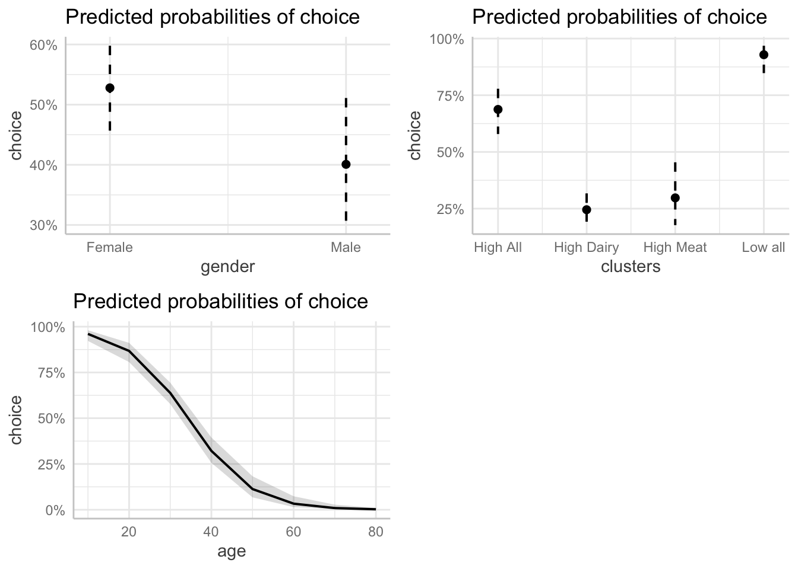
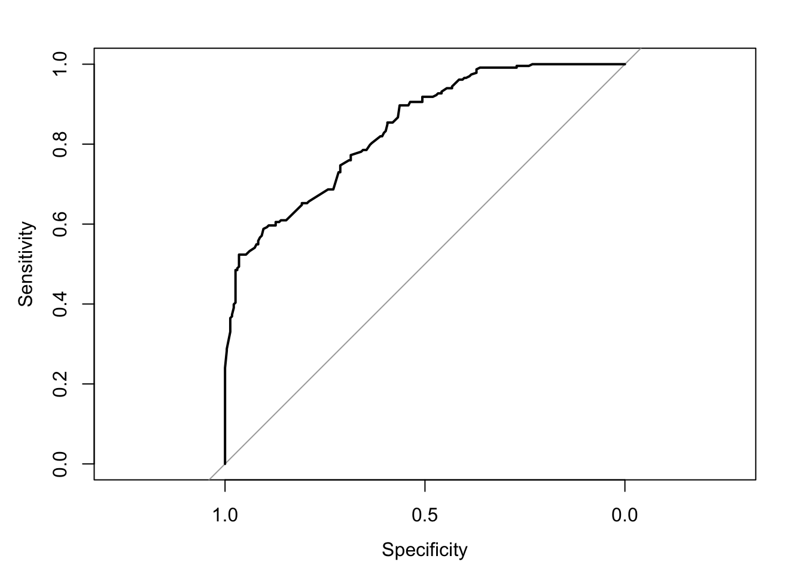

Warning: package 'ggplot2' was built under R version 4.6.1
Warning: package 'gridExtra' was built under R version 4.6.1
Warning: package 'dials' was built under R version 4.6.1
Warning: package 'modeldata' was built under R version 4.6.1
Warning: package 'parsnip' was built under R version 4.6.1
La variable réponse \(Y\) à deux modalités 0 ou 1, on considère \(X=(X_1,X_2,\ldots,X_p)\) un vecteur de p variables explicatives (qui peuvent être qualitatives ou quantitatives) et on veut modéliser \[\mathbb P(Y=1|X) \] d’où on déduira \(\mathbb P(Y=0|X)=1-\mathbb P(Y=1|X)\).
On a la contrainte \(\mathfrak p=\mathbb P(Y=1|X)\in[0,1]\) donc on ne peut pas utiliser directement une régression linéaire de \(\mathfrak p=\mathbb P(Y=1|X)\) sur \(X\), c’est-à-dire qu’on ne peut pas écrire \(\mathbb P(Y=1|X)=\beta_0+\beta_1 X_1+\ldots+\beta_p X_p.\)
L’idée est de trouver une fonction \(g\) qui sera strictement monotone et continue définie de \(]0,1[\) dans \(\mathbb R\) telle que \[g(\mathbb P(Y=1|X))=\beta_0+\beta_1 X_1+\ldots+\beta_p X_p,\] une telle fonction s’appelle une fonction de lien.
1.1 La fonction logistique
La fonction logit définie sur \(]0,1[\) par \[\text{logit}(\mathfrak p)=\log\left(\frac{\mathfrak p}{1-\mathfrak p}\right),\] est une solution au problème précédent : c’est la fonction de lien de la régression logistique.
Dans notre problème il faut calculer la fonction réciproque de \(g\) c’est-à-dire trouver la fonction \(h\) telle que \(g(\mathbb P(Y=1|X))=\beta_0+\beta_1 X_1+\ldots+\beta_pX_p\) est équivalent à \(\mathbb P(Y=1|X)=h(\beta_0+\beta_1 X_1+\ldots+\beta_pX_p).\)
La fonction réciproque du logit est la fonction logistique\(h\) définie sur \(\mathbb R\) par : \[h(x)=\frac{1}{1+e^{-x}}.\]
On donne ci-dessous la représentation graphique de la fonction \(\dfrac{1}{1+e^{-\beta x}}\) pour différentes valeurs de \(\beta\) et pour \(x\in \mathbb R\).
expit<-function(x) 1/(1+exp(-x))x=seq(-10,10,by=.1)df=data.frame(x=rep(x,4),b=c(rep(1,length(x)),rep(.5,length(x)),rep(2,length(x)),rep(-2,length(x))),p=c(expit(x),expit(.5*x),expit(2*x),expit(-2*x)))df$b=factor(df$b)ggplot(df,aes(x=x,group=b,color=b,y=p))+geom_line()+theme_minimal()+labs(title=paste("Représentation de la fonction"))

1.2 Exemple :
Les données sont disponibles ici. On a demandé à des consommateurs s’ils accepteraient de faire une semaine VEGAN (variable choice 1 pour OUI et 0 pour NON).
La syntaxe pour une régression logistique utilise la fonction glm (generalized linear model) de R ; pour indiquer le choix du lien logit on utilise family=“binomial” (le lien logit est le lien par défaut de cette famille). Attention : il faut que la variable \(Y=choice\) soit numérique de modalités 0,1 (ou un facteur dont la première modalité correspond à 0).
Remarque : Ces valeurs sont cohérentes avec le tableau de contingence si on calcule la probabilité de choisir la semaine vegan sachant qu’on est une femme : 178/(162+178) ou qu’on est un homme : 55/(67+55).
1.3.1 Odds (cotes) et Odds ratios
OR (Odds Ratio) signifie rapport de cotes.
Pour comprendre cette notion on considère les paris sportifs : par exemple admettons que l’on a 3 chevaux A,B,C au départ d’une course. On note \(G\) le gagnant de la course.
si on considère que A a 2 chances sur 3 de gagner (i.e. \(p_{G=A}=\frac{2}{3}\)) la cote de A est \[Odds_A=\frac{p_{G=A}}{1-p_{G=A}}=2,\] le cheval A a une cote de 2 contre 1, c’est-à-dire que A a 2 fois plus de chance de gagner que de perdre.
si pour le cheval B on a \(p_{G=B}=1/6\), alors \(Odds_B=\frac{1/6}{5/6}=\frac{1}{5}\), le cheval B a cinq fois plus de chance de perdre que de gagner.
Faire de même pour le cheval C.
Revenons à l’exemple du choix du repas vegan :
quelle est la cote du choix vegan chez les femmes ? chez les hommes ?
Il existe un lien naturel (du fait de la fonction logistique) entre les coefficients du modèle et les cotes : un simple calcul permet d’obtenir :
\(Odds_{choix=1|gender=F}=e^{\beta_0}\),
\(Odds_{choix=1|gender=M}=e^{\beta_0+\beta_1}\).
On peut vérifier qu’on trouve les mêmes résultats qu’avec le tableau de contingence.
Odds Ratio (rapport de cotes)
On définit le rapport de cotes entre les deux événements A et B : \[OR_{A/B}=\frac{Odds_A}{ Odds_B}=\frac{p_A/(1-p_A)}{p_B/(1-p_B)}.\]
Retour sur l’exemple précédent : \(OR_{A/B}=10\), la cote du cheval A est 10 fois plus grande que celle de B. De même calculer le rapport de cotes de B par rapport à C.
Donc, dans l’exemple, la cote de choisir la semaine vegan chez les femmes est égale à 1.34 fois celle des hommes. Attention : cet OR n’est pas significativement différent de 1 (p = 0.17), ce qui est cohérent avec le test du \(\chi^2\).
En fait les valeurs des OR ne sont pas très importantes à interpréter, ce qui compte c’est :
Interprétation OR
si \(OR=1\) pas de lien entre la variable explicative \(X\) et la probabilité \(P(Y=1|X),\)
si \(OR>1\) lien positif entre la variable explicative \(X\) et la probabilité \(P(Y=1|X),\)
si \(OR<1\) lien négatif entre la variable explicative \(X\) et la probabilité \(P(Y=1|X),\) il sera plus facile d’utiliser \(1/OR\) pour l’interprétation.
1.4 Modèle à 1 variable explicative catégorielle
On regarde par exemple le lien avec la variable clusters (profil de consommation alimentaire) qui est catégorielle à 4 modalités : High All (HA), High Dairy (HD), High Meat (HM) et Low all (LA).
On peut comme précédemment utiliser un test du \(\chi^2\) pour répondre à cette question :
data |>select(Choice,clusters) |>tbl_cross() |>add_p(source_note=T)
La fonction Anova() du package car permet de retrouver un résultat très proche de celui du test du \(\chi^2\), il s’agit du test de déviance (test du rapport de vraisemblance) :
La fonction summary (ou ici tbl_regression) permet d’obtenir les valeurs des coefficients ainsi que leur significativité :
tbl_regression(mod)
Characteristic
log(OR)
95% CI
p-value
clusters
High All
—
—
High Dairy
-1.1
-1.6, -0.66
<0.001
High Meat
-0.92
-1.6, -0.24
0.009
Low all
1.3
0.57, 2.1
<0.001
Abbreviations: CI = Confidence Interval, OR = Odds Ratio
La modalité de référence est la première dans l’ordre alphabétique, ici High All. Comme précédemment on écrit \(\widehat{P}(choice=1|clusters)=\frac 1{1+e^{-(\beta_0+\beta_{HD}\times 1_{clusters=HD}+\beta_{HM}\times 1_{clusters=HM} +\beta_{LA}\times 1_{clusters=LA})}}\) où les coefficients \(\beta_j\) sont donnés précédemment.
Les résultats précédents s’appliquent directement : la probabilité de choisir la semaine végan sachant qu’on mange beaucoup de viande est :
ce qui est cohérent avec la table de contingence : 19/(29+19).
La cote du choix végan dans la catégorie de référence High All est \(e^{\beta_0}=\) 1.64 qui est elle aussi cohérente avec la table de contingence : 77/47
La cote du choix végan dans la catégorie Low all est \(e^{\beta_0+\beta_{LA}}=\) 6 (table de contingence : 60/10)
Là encore on peut calculer les OR de chaque catégorie par rapport à la catégorie de référence (High All)
tbl_regression(mod,exponentiate=T)
Characteristic
OR
95% CI
p-value
clusters
High All
—
—
High Dairy
0.33
0.21, 0.52
<0.001
High Meat
0.40
0.20, 0.79
0.009
Low all
3.66
1.77, 8.22
<0.001
Abbreviations: CI = Confidence Interval, OR = Odds Ratio
On peut déduire de ces résultats que, par rapport à la catégorie HA, la cote de choisir la semaine végan est significativement plus faible dans les catégories HD et HM, et significativement plus élevée dans la catégorie LA.
On peut aussi calculer des rapports de cotes entre deux catégories qui ne sont pas la référence, par exemple la cote de choisir la semaine végan pour le cluster HD par rapport à celle de HM. Cet OR se déduit des coefficients précédents : \(OR_{HD/HM}=OR_{HD}/OR_{HM}=e^{\beta_{HD}-\beta_{HM}}=\) 0.82. De même \(OR_{HA/HD}=e^{0-\beta_{HD}}=\) 3.04. Pour tester leur significativité, le plus simple est de changer la modalité de référence (fonction relevel).
1.4.1 Test de déviance
Pour tester l’effet du facteur clusters il faut tester si l’ensemble des coefficients précédents est nul, \(H_0:\beta_1=...=\beta_{J-1}=0\) où \(J\) est le nombre de niveaux du facteur considéré \(\leadsto\) c’est le test de déviance vu précédemment.
Welch Two Sample t-test
data: age by Choice
t = -9.9542, df = 324.4, p-value < 2.2e-16
alternative hypothesis: true difference in means between group Végan and group Non Végan is not equal to 0
95 percent confidence interval:
-12.335014 -8.263933
sample estimates:
mean in group Végan mean in group Non Végan
29.39485 39.69432
Il existe donc un lien entre le fait de choisir le repas végan et l’âge. L’âge moyen des participants choisissant la semaine végan (\(M=29.4\)) est significativement inférieur à celui des participants qui ne la choisissent pas (\(M=39.7\)).
Le test de déviance est dans ce cas un test sur des modèles emboîtés. Avec car::Anova (tests de type II), chaque ligne teste l’apport d’une variable au modèle contenant toutes les autres variables. Par exemple, la ligne clusters indique que l’ajout de la variable clusters au modèle contenant gender et age permet de prédire significativement mieux la variable choice. (La fonction anova() de base, elle, fait des tests séquentiels de type I, qui dépendent de l’ordre des variables.)
tbl_regression(mod,exponentiate=T)
Characteristic
OR
95% CI
p-value
gender
Female
—
—
Male
0.60
0.35, 1.01
0.054
clusters
High All
—
—
High Dairy
0.15
0.08, 0.27
<0.001
High Meat
0.19
0.08, 0.44
<0.001
Low all
5.93
2.36, 16.3
<0.001
age
0.88
0.85, 0.90
<0.001
Abbreviations: CI = Confidence Interval, OR = Odds Ratio
On peut aussi représenter les coefficients et leurs intervalles de confiance :
ggcoef(mod,type ="faceted",exponentiate=T)

On peut en conclure que :
À profil alimentaire et âge égaux, la cote de choisir la semaine végan des hommes n’est pas significativement différente de celle des femmes au seuil de 5 % (OR = 0.6, p = 0.054). Si on l’interprétait, la cote des femmes serait \(1/OR=\) 1.67 fois celle des hommes : un OR porte sur les cotes, pas directement sur les probabilités.
La probabilité de choisir la semaine végan diminue significativement avec l’âge, toutes choses égales par ailleurs (c’est-à-dire pour des participants de même genre et de même profil alimentaire) : chaque année supplémentaire multiplie la cote par 0.877.
Les effets des profils alimentaires restent significatifs après ajustement sur le genre et l’âge.
Registered S3 method overwritten by 'lme4':
method from
na.action.merMod car

1.7 Evaluation de la qualité du modèle logistique
1.7.1 Prédiction/ matrice de confusion
Le modèle étant ajusté on obtient \(\widehat{P}(Y_i=1|X_{i1},...X_{ip})\) pour chaque individu \(i\). Il reste à donner un seuil \(s\) pour déterminer \(\widehat{Y}_i\), c’est-à-dire \[
\widehat{Y}_i=\begin{cases}
1 \ \text{si } \widehat{\mathfrak p}_i\geq s \\
0 \ \text{sinon}
\end{cases},
\]
Le choix usuel est \(s=0.50\).
Ceci donne la matrice de confusion
\(\widehat{Y}=0\)
\(\widehat{Y}=1\)
\(Y=0\)
Erreur
\(Y=1\)
Erreur
1.7.2 Sensibilité / Spécificité
\(\widehat{Y}=0\)
\(\widehat{Y}=1\)
\(\Sigma\)
\(Y=0\)
VN
FP
N
\(Y=1\)
FN
VP
P
la sensibilité du modèle : capacité à bien identifier les individus positifs, c’est-à-dire la proportion de vrais positifs \[Se=\frac{\#(\widehat{Y}=1,Y=1)}{\#(Y=1)}=\frac{VP}{P}=1-\frac{FN}{P}.\]
la spécificité du modèle : capacité à bien identifier les individus négatifs, c’est-à-dire la proportion de vrais négatifs \[Sp=\frac{\#(\widehat{Y}=0,Y=0)}{\#(Y=0)}=\frac{VN}{N}=1-\frac{FP}{N}.\]
On calcule la sensibilité et la spécificité pour différentes valeurs du seuil \(s\) entre 0 et 1. On représente d’abord ces deux quantités en fonction de \(s\), puis la courbe ROC, c’est-à-dire le taux de vrais positifs (sensibilité) en fonction du taux de faux positifs (1-spécificité) :
s<-seq(0,1,by=.001)prob<-predict(mod,newdata = data,type="response")sensib<-rep(0,length(s))specif<-rep(0,length(s))Yobs=data$choicefor(i in1:length(s)){Ypred<-as.numeric(prob>s[i])sensib[i]<-sum(Yobs==1& Ypred==1)/sum(Yobs==1)specif[i]<-sum(Yobs==0& Ypred==0)/sum(Yobs==0) }roc=data.frame(x=s,sensib=sensib,specif=specif,spec2=1-specif)ggplot(roc,aes(x=s,y=sensib))+geom_line(color="red")+geom_line(aes(x=s,y=specif),color="blue")+theme_minimal()+labs(x="seuil s",y="probabilité",title="Sensibilité (rouge) et spécificité (bleu) selon le seuil")
Il s’agit de l’aire sous la courbe ROC (entre la courbe et l’axe des abscisses). Elle est comprise entre 0 et 1 : une AUC de 0.5 correspond à un modèle qui classe au hasard (courbe confondue avec la première bissectrice), et plus l’AUC est proche de 1 meilleur est le modèle.
library(pROC)
Type 'citation("pROC")' for a citation.
Attaching package: 'pROC'
The following objects are masked from 'package:stats':
cov, smooth, var
roc_objet<-roc(data$choice,prob)
Setting levels: control = 0, case = 1
Setting direction: controls < cases
plot.roc(roc_objet)

auc(roc_objet)
Area under the curve: 0.8385
1.8 La régression logistique en apprentissage statistique
On va tester l’ensemble des variables pour prédire la variable choice. Pour simplifier les variables ordinales sont considérées comme des variables quantitatives.
1.8.1 Principe de l’évaluation d’un modèle
En général on évalue la qualité du modèle sur des données qui n’ont pas servi à l’estimer : l’échantillon initial est donc décomposé en deux sous échantillons :
échantillon d’apprentissage ( par exemple 3/4 des observations)
échantillon de test (par exemple 1/4 des observations)
Ici on veut modéliser la variable choice : il est donc important que ces deux échantillons respectent bien la proportion initiale des deux modalités de choice (échantillonnage stratifié) :
data |>select(Choice) |>tbl_summary()
Characteristic
N = 4621
Choice
Végan
233 (50%)
Non Végan
229 (50%)
1 n (%)
Le package tidymodels offre de très nombreuses fonctionnalités permettant d’estimer et de tester des modèles (linéaires, random forest, …)
library(tidymodels)set.seed("4485") # pour avoir les mêmes échantillonschoice_split <-group_initial_split(data = data,group=ID,strata=choice)train_data <-training(choice_split)train_data |>select(choice) |>tbl_summary()